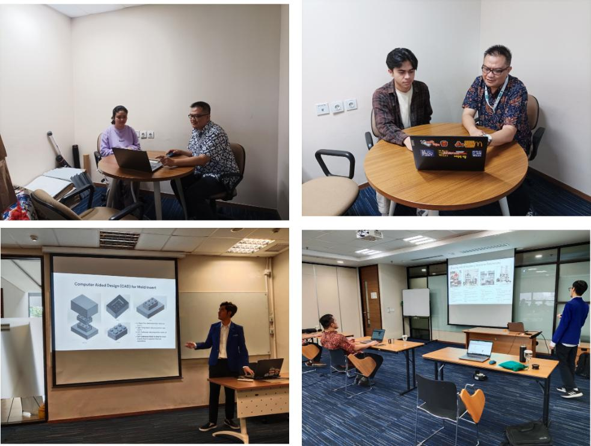

PROJECTS PARTICIPATION
Past Participation
- Principal Investigator, Assessing the Potential of 4D Printed Smart Packaging for Medical Products, (January - December 2025).
- Principal Investigator, Development of 4D Printed Finger Self-Actuator Grippers Using Heat-Conductive Wire (November 2024 - October 2025).
- Principal Investigator, Design Optimization of a 4D Printed Self-Actuating Gripper with Heat Stimulus (November 2023 - October 2024).
- Co-Investigator, Mechanical Property Analysis of DLP 3D Printed PLA and Nanoparticle Mixture (November 2023 - October 2024).
- Principal Investigator, National Grant for Fundamental Research entitled Innovation in Polymer Micro-Fluid Device Fabrication Process Using 3D Printing (January - December 2023).
- Co-Investigator, UK-Indonesia Going Global Partnerships (GGP) Grant 2022 entitled Game-EduTech: Teachers' training using sustainability and culture based gamified tools for engineering focused STEM learning (February - August 2023).
- Principal Investigator, Analysis of The Printing Parameters on 4D printed Polylactic Acid (PLA) Structures (September 2022 - August 2023).
- Co-Investigator, Mechanical Study of PLA/Graphene Oxide/Silicon Dioxide Composite as 3D-Printed Material (September 2022 - August 2023).
- Principal Investigator, Development of Microfluidic Devices Fabrication Using Digital Light Processing 3D Printing Process (November 2021 - September 2022).
- Principal Investigator, Development of Electric Discharge Machining (EDM) using solenoid actuator for educational purpose (November 2020 - September 2021).
- Principal Investigator, Development of Magnetic Abrasive Finishing Setup to Improve Surface Finish of Microfeatures Produced by Milling Process (November 2019 - July 2020).
- Principal Investigator, Development of Ball Tip Milling Magnetic Abrasive Finishing to Improve Surface Finish of Biocompatible Materials (April 2018 - March 2020).
- Principal Investigator, Micro-Cutting of Biocompatible Materials Used for Medical Applications (June 2015 - September 2017).
- Co-Investigator, UV Disinfection Robot: Development for Autonomous Cleaning Platform based on Ground Vehicle Robot (November 2020 - September 2021).
- Co-Investigator, Modes and Progression of Tool Deterioration and Their Effects on Cutting Force During End Milling of Hastelloy 242 Nickel Based Superalloy with Nano Coolant Approach (April 2018 - April 2020).
- Co-Investigator, Analysis and prediction of the cutting forces of Three-Dimensional End Milling using Finite Elements Modelling (June 2017 - June 2019).
- Co-Investigator, Suppression of Chatter in High-Speed Milling Using Microcontroller Based Speed Controller by Spindle Speed Variation Method (May 2017 - May 2019).
- Co-Investigator, Investigation of Micro-Abrasion Behaviour of Nano-Ceramic in Magnetorheological Polishing Fluid (August 2016 - July 2019).
- Co-Investigator, Characterisation of Nano-Coolant for Improving Cooling Channel Design in Hot Press Forming (June 2016 - June 2018).
- Co-Investigator, Development of a Low-Cost Miniature Waterjet Machine for Micromachining Applications (June 2015 - June 2017).
- Research Fellow, Efficient Wafering and Texturing of Single and Multi-Crystalline Silicon for Solar Cells (August 2011 - January 2015).
- Research Student, Producing Novel Thin Sheet Embossing Tools for Mass-Manufacturing of Polymer-Based Microfluidic Devices Using Advanced Micro-Cutting Technology (2008 - 2010).
Current Research Interests
- Investigating the influence of various stimuli such as temperature, humidity, pH on the shape-changing behavior of 4D printed structures.
- Developing novel design methodologies for 4D printed objects with predictable and controllable shape transformations.
- Exploring the use of advanced materials including shape-memory polymers, hydrogels, and stimuli-responsive composites, for 4D printing applications.
Undergraduate Supervision
- Supervision at Undergraduate level (Final Year Projects):
- Academic year 2023 - 2024:
-
- Enhancing Mechanical Properties of SLA 3D Printed Photopolymers Using Halloysite Nanotubes Reinforcement (Amartya Natayu).
- Development of a Hot Embossing Machine Using a Linear Actuator for Polymer Microfluidic Devices Fabrication (Azka Aulia Muhammad).
- The Effect of Current, Temperature, and Wire Arrangement to the 4D Printed Self Actuator Finger Stimulated by Heat Conducting Wire (Azhari Tumada).
- Optimization of Mechanical Properties of Resin Blend Between PLA Like Resin and Tough Resin for Hand Orthosis Application (Marvel Mahadi Setjawidjaja).
- Analysis on 3D Printed PLA Copper Coated Using Nickel Electroplating (Ramses Maur Ragaventrand Aiboy).
- Academic year 2022 - 2023:
- Design Optimization of a 4D Printed Self-Actuating Gripper with Heat Stimulus (Ryan Antonio).
- Optimization of Printing Parameters on Digital Light Processing 3D Printing (Nanda Indriana).
- Academic year 2021 - 2022:
- Fabrication of Rigid Polyurethane Foam Lumbar Spine Model for Surgical Training Using Indirect Additive Manufacturing (Asriyanti).
- Development of 3-Degrees of Freedom (DOF) Robotic Arm Using Kinematics Approach (Mochammad Rafli Ramadhani).
- Development and Modification of the Extrusion Mechanism in Fuse Deposition Modelling (FDM) 3D Printer for Food Production (Fini Bestiara).
- Implementation of Object Detection System Using OpenCV and Python (Sri Nararia Anggita Damayanti).
- Academic year 2020 - 2021:
- Development of Electric Discharge Machining (EDM) using Current Sensor Module for Gap Controller (Hanifatuttaqiyyah Nur Fauzah).
- Analysis the Influence of Deformation Temperature, Recovery Temperature, Infill Density, Printing Speed, and Thickness on 4D Printed Polylactic Acid (PLA) Structures (Camytha Octanuryati Rochmad).
- Implementation of Convolutional Neural Network Algorithm for Autonomous Ultraviolet Disinfection Robot (Tiara Kusuma Dewi).
- Development of Three Axis CNC Micro-Milling Machine: Structural Analysis (Maria Anggi Octaviani).
- Fabrication Of Chemotaxis Microfluidic Device Mould Using Micro-Milling and Digital Light Processing 3D Printing Methods (Amelia Nuraisyah Quinsi Jemy).
- Academic year 2019 - 2020:
- Optimization of magnetic abrasive composition for deburring aluminium alloy (Mardhiyastuti Aulia Rahma).
- Optimization of the Compressive strength of Honeycomb Structure Using Finite Element Analysis (Octarina Adiati Juniasih).
- Construction of online vibration monitoring system based on wireless sensor networks (WSNs) for machining process (Fijai Naja Azmi).
- Development of Electric Discharge Machining (EDM) Using Solenoid Actuator for Educational Purpose (Arnaz Asa Sholeh).
- Development of low-cost 3D scanner using laser stripe scanning (LSS) method (Pusva Juliana).
- Manufacturing process of ankle foot orthotics using 3D scanner and 3D printing methods (Dinda Arina Manasikana).
- Tensile properties analysis of implementing infill pattern and density of 3D printed PLA material using a simulation test (Ratna Dyah Novitasari).
- Finite element study on burnishing process alloy steel AISI 52100 (Ken Risa Ayu Ndaru Ningrum).

Final Year Project Supervisor with topic mainly in manufacturing, materials and
design